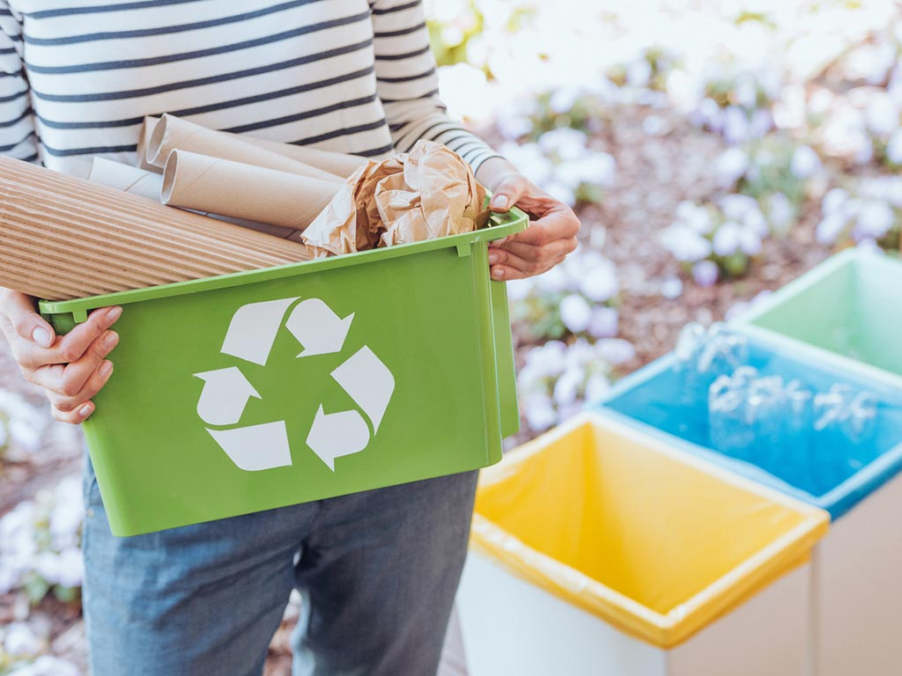

EcoHarmony | Cultivando un Futuro Sostenible | 8/04/2024

En el viaje hacia un planeta más saludable y sostenible, los hábitos y la cultura del reciclaje juegan un papel fundamental. Más allá de simplemente separar nuestros desechos, el reciclaje implica un cambio profundo en nuestra forma de pensar y actuar hacia el medio ambiente. En este post, exploraremos cómo los hábitos y la cultura del reciclaje afectan al medio ambiente y por qué son tan importantes para un futuro sostenible.
1. Separación adecuada de residuos: El primer paso hacia una cultura del reciclaje efectiva es la correcta separación de residuos en hogares, empresas y espacios públicos. Clasificar los materiales reciclables, como papel, cartón, plástico, vidrio y metal, ayuda a facilitar su posterior procesamiento y reciclaje, evitando la contaminación cruzada y maximizando la cantidad de materiales recuperados.
2. Reducir y reutilizar: Antes de reciclar, es importante considerar la posibilidad de reducir y reutilizar los materiales siempre que sea posible. Esto implica reducir el consumo de productos desechables, optar por productos duraderos y reutilizables, y darle una segunda vida a los artículos antes de desecharlos. La reducción y la reutilización son componentes clave de un enfoque integral de gestión de residuos que minimiza la cantidad de desechos que generamos en primer lugar.
3. Educación y concienciación: Fomentar la educación y la concienciación sobre la importancia del reciclaje es esencial para promover una cultura sostenible. Campañas de sensibilización, programas educativos en escuelas y lugares de trabajo, y la divulgación de información sobre los beneficios ambientales y económicos del reciclaje son herramientas poderosas para inspirar cambios de comportamiento y generar un mayor compromiso con prácticas más sostenibles.
1. Responsabilidad individual y colectiva: La cultura del reciclaje implica asumir la responsabilidad tanto a nivel individual como colectivo. Cada persona tiene el poder de hacer una diferencia al adoptar hábitos de reciclaje responsables en su vida diaria, pero también es necesario un compromiso más amplio de la sociedad en su conjunto, incluyendo gobiernos, empresas y organizaciones, para crear políticas y estructuras que faciliten y promuevan el reciclaje.
2. Innovación y tecnología: La promoción de una cultura del reciclaje también implica fomentar la innovación y la tecnología en el ámbito de la gestión de residuos. Desde avances en el diseño de productos más fácilmente reciclables hasta nuevas tecnologías de reciclaje que permiten la recuperación de materiales de manera más eficiente, la innovación desempeña un papel crucial en la creación de sistemas de reciclaje más efectivos y sostenibles.
1. Reducción de la contaminación: El reciclaje ayuda a reducir la cantidad de desechos que terminan en vertederos, incineradoras y en la naturaleza, lo que minimiza la contaminación del aire, el agua y el suelo asociada con la gestión de residuos. Esto protege la salud de los ecosistemas naturales y de las comunidades humanas que dependen de ellos.
2. Conservación de recursos naturales: Al reciclar materiales en lugar de desecharlos, se reduce la necesidad de extraer y procesar nuevas materias primas, lo que ayuda a conservar los recursos naturales y a preservar la biodiversidad de los ecosistemas. Además, el reciclaje también puede ahorrar energía y reducir las emisiones de gases de efecto invernadero asociadas con la extracción y producción de nuevos materiales.
3. Fomento de la economía circular: El reciclaje forma parte de un enfoque más amplio de economía circular, donde los recursos se utilizan de manera más eficiente y se minimiza el desperdicio. Al fomentar una cultura del reciclaje, estamos contribuyendo a la creación de una economía más sostenible y resiliente que beneficia tanto al medio ambiente como a la sociedad en su conjunto.